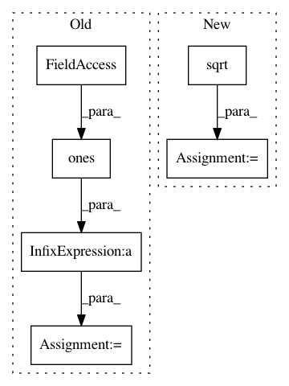

93ff2240f329431e77f3e613a8dbfaab911c82e9,keras/layers/recurrent.py,JZS2,__init__,#JZS2#Any#Any#Any#Any#Any#Any#Any#Any#Any#,494
Before Change
self.b_h = shared_zeros((self.output_dim))
// P_h used to project X onto different dimension
P = np.ones((self.input_dim, self.output_dim), dtype=theano.config.floatX)
P = P / np.linalg.norm(P, axis=0)
self.Pmat = theano.shared(P, name=None)
self.params = [
self.W_z, self.U_z, self.b_z,
After Change
self.Pmat = theano.shared(np.identity(self.output_dim), name=None)
else:
P = np.random.binomial(1, 0.5, size=(self.input_dim, self.output_dim)) * 2 - 1
P = 1 / np.sqrt(self.input_dim) * P
self.Pmat = theano.shared(P, name=None)
self.params = [
self.W_z, self.U_z, self.b_z,
In pattern: SUPERPATTERN
Frequency: 3
Non-data size: 6
Instances
Project Name: keras-team/keras
Commit Name: 93ff2240f329431e77f3e613a8dbfaab911c82e9
Time: 2015-06-25
Author: lchen3@gmail.com
File Name: keras/layers/recurrent.py
Class Name: JZS2
Method Name: __init__
Project Name: NifTK/NiftyNet
Commit Name: 369afab10deee16ef572c738df083d2e74863e64
Time: 2017-08-27
Author: wenqi.li@ucl.ac.uk
File Name: niftynet/application/toy_application.py
Class Name: ToyApplication
Method Name: connect_data_and_network
Project Name: keras-team/keras
Commit Name: 93ff2240f329431e77f3e613a8dbfaab911c82e9
Time: 2015-06-25
Author: lchen3@gmail.com
File Name: keras/layers/recurrent.py
Class Name: JZS1
Method Name: __init__